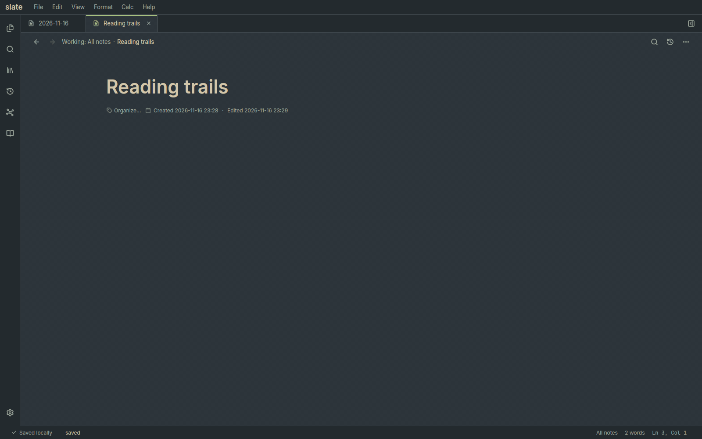
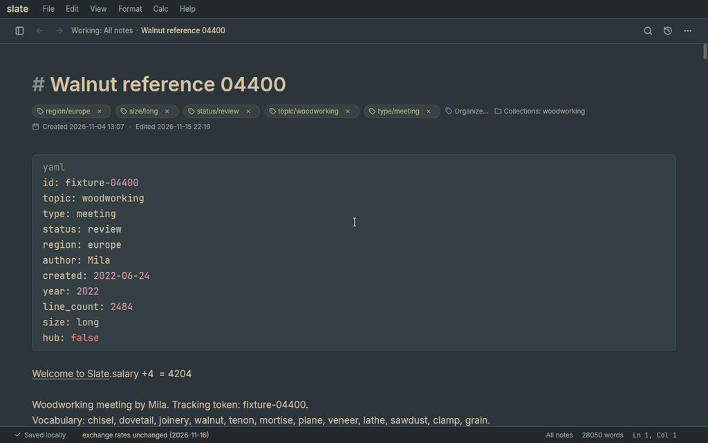
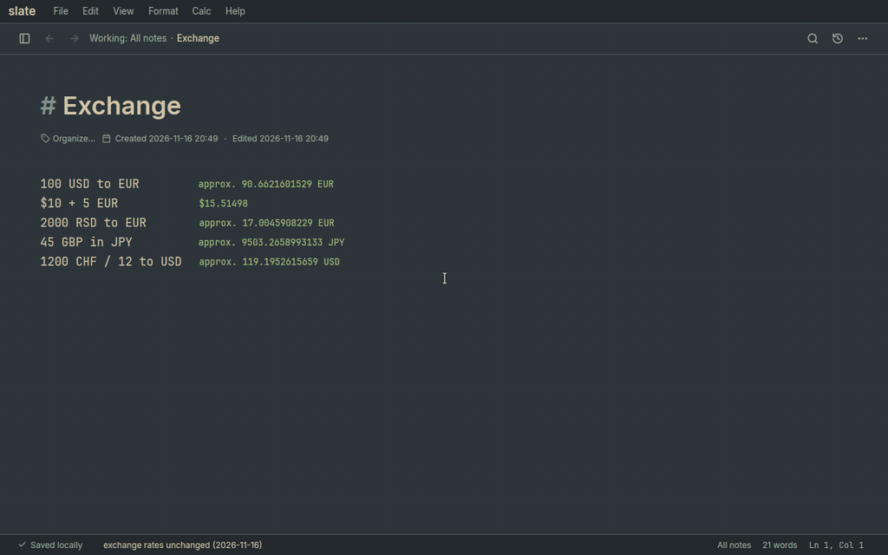
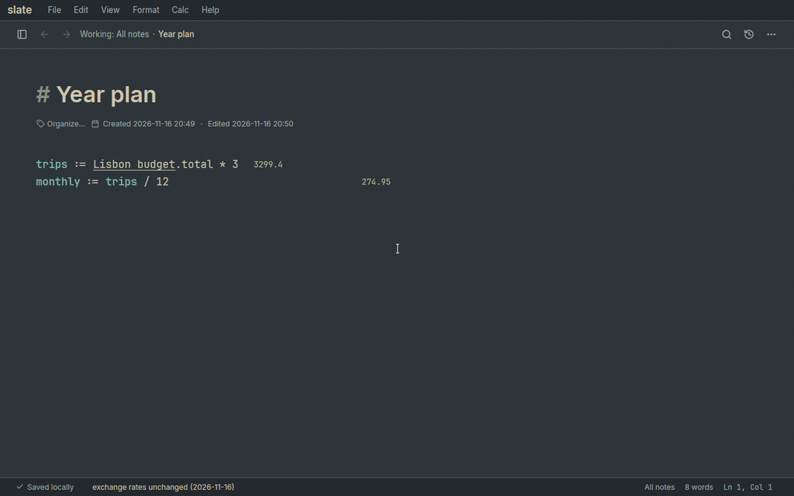
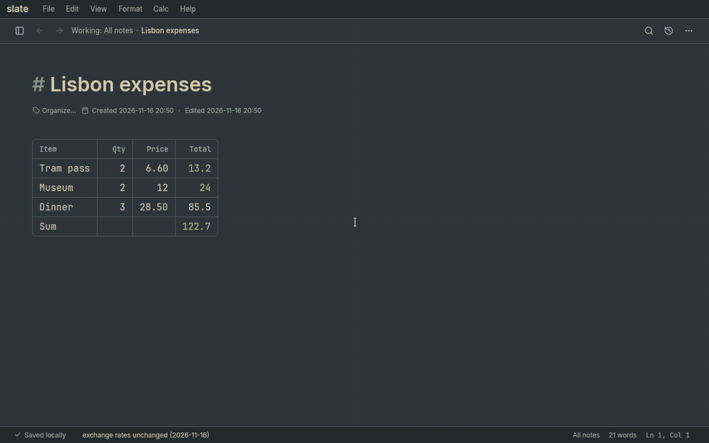
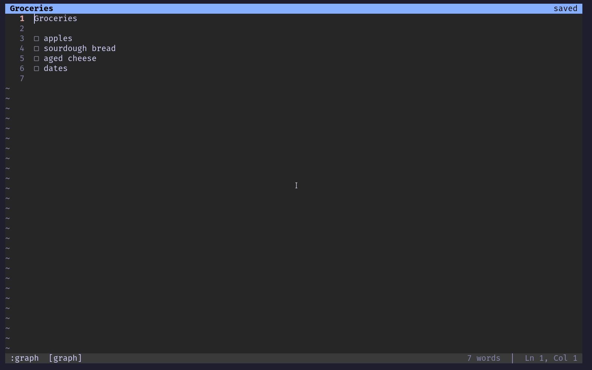
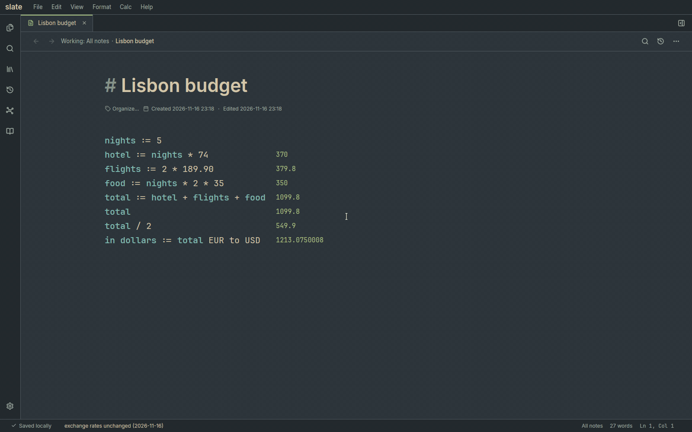

Where your thoughts live.¶
Write notes, work out numbers, and connect your ideas. Use Slate on your desktop or in your terminal. Your notes stay on your computer.
Start with Slate Explore the features
See Slate at work¶
Choose a feature. Follow it from a first keystroke to a finished idea.
One thought leads to another.¶
Type [[ to find a note, follow the link, then pick up where you left off.

Write in the moment.¶
Headings, checklists, emphasis and quotes take shape as you type. Your notes stay Markdown.

Let the notebook do the arithmetic.¶
Name a value, build a budget, and change your mind. Everything that depends on it updates.

Small tables. Useful answers.¶
Paste your rows, add a formula, and let the totals take care of themselves.

Draw the shape of an idea.¶
Connect shapes on a fullscreen canvas. The diagram stays text inside your note.

Take your notebook to the terminal.¶
The same notes, search, collections and graph, with your hands on the keyboard—even over SSH.


The desktop app on a notebook of 25,000 notes (4 GB): it finds a note from a few letters of its title, opens a 6 MB note of almost 800,000 words, scrolls it and searches inside it.
Two apps, one notebook¶
Slate (slate-gui) is the desktop app, with menus, mouse support, a
diagram canvas and a graph view. slate is the terminal app: the same
editor in any terminal, over SSH too, driven entirely from the keyboard. Both
read the same notes (~/.local/share/slate/notes.db) and the same config
(~/.config/slate/config.toml), and you can keep both open: a note changed
in one shows up in the other within a second. No accounts, no cloud.
Explore¶
-
Everything within reach
Keep your notes, outline and connections beside what you're writing.
-
See the bigger picture

Follow a connection, or group related notes to see how your ideas fit together.

-
Getting started
Open Slate, write your first note, find commands and help.
-
Writing
Markdown styled in place: lists, checklists, folding, images, dates and reminders.
-
Calculations
Any line is a calculator: units, clock times, currencies, variables, even values from other notes.
-
Tables
Tables that align themselves, with formula cells and column totals.
-
Links and the graph
Wiki links between notes, and a map of how 25,000 of them connect.
-
Search
One query language for titles, tags, collections and full text.
-
Organizing
Collections, tags, pins, the browser, version history, daily notes and quick capture from the shell.
-
Diagrams
Draw on a canvas; the diagram stays text in your note and exports to SVG you can edit in draw.io.
-
Export, backup and email
PDF and Markdown export, full backups, and email pulled into notes.
-
Vim mode and scripts
Modal editing, macros, your own key bindings and scripts.
-
AI
Ask Claude Code or Codex about a note, and let AI assistants work with your notes over MCP.
-
Encryption
Lock a note, or a whole collection, with a password.
-
Themes and configuration
Fourteen color schemes, fonts, and every setting worth knowing.
-
Performance
Why Slate stays fast with huge notes and large notebooks.
-
The terminal app
The whole of Slate in a terminal.
-
Reference
Every feature, key, command and setting.
About the recordings¶
The animations and screenshots were recorded from the current apps on Linux in a fullscreen 1600 × 1000 workspace. The GIFs retain that resolution; tap a recording to open it full-screen and zoom in for the details.
The demo notebook has more than 25,000 notes, plus a small set of connected
example notes for the graph. Most desktop recordings use Everforest Dark;
the terminal recordings use Catppuccin Mocha. They are made by
scripts/capture.py,
so they can be recorded again whenever the apps change.